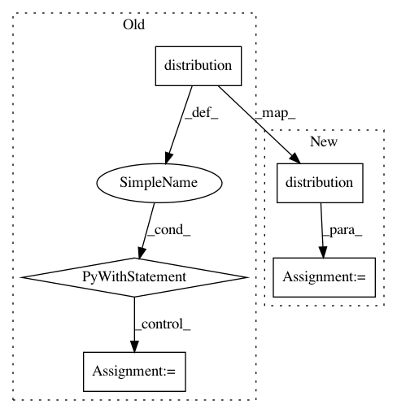

3b77f6b6c38fea6616cae10ca8e0c3a20782934a,contrib/go/tests/python/pants_test/contrib/go/subsystems/test_go_distribution.py,GoDistributionTest,test_bootstrap,#GoDistributionTest#,25
Before Change
yield factory.create()
def test_bootstrap(self):
with self.distribution() as go_distribution:
go_cmd = go_distribution.create_go_cmd(cmd="env", args=["GOROOT"])
output = go_cmd.check_output()
self.assertEqual(go_distribution.goroot, output.strip())
def assert_no_gopath(self):
with self.distribution() as go_distribution:
go_cmd = go_distribution.create_go_cmd(cmd="env", args=["GOPATH"])
After Change
return factory.create()
def test_bootstrap(self):
go_distribution = self.distribution()
go_cmd = go_distribution.create_go_cmd(cmd="env", args=["GOROOT"])
output = go_cmd.check_output()
self.assertEqual(go_distribution.goroot, output.strip())
In pattern: SUPERPATTERN
Frequency: 3
Non-data size: 5
Instances
Project Name: pantsbuild/pants
Commit Name: 3b77f6b6c38fea6616cae10ca8e0c3a20782934a
Time: 2016-09-12
Author: benjyw@gmail.com
File Name: contrib/go/tests/python/pants_test/contrib/go/subsystems/test_go_distribution.py
Class Name: GoDistributionTest
Method Name: test_bootstrap
Project Name: pantsbuild/pants
Commit Name: 3b77f6b6c38fea6616cae10ca8e0c3a20782934a
Time: 2016-09-12
Author: benjyw@gmail.com
File Name: contrib/go/tests/python/pants_test/contrib/go/subsystems/test_go_distribution.py
Class Name: GoDistributionTest
Method Name: assert_no_gopath
Project Name: pantsbuild/pants
Commit Name: 3b77f6b6c38fea6616cae10ca8e0c3a20782934a
Time: 2016-09-12
Author: benjyw@gmail.com
File Name: contrib/go/tests/python/pants_test/contrib/go/subsystems/test_go_distribution.py
Class Name: GoDistributionTest
Method Name: test_go_command_gopath